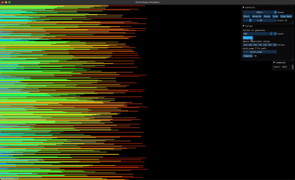
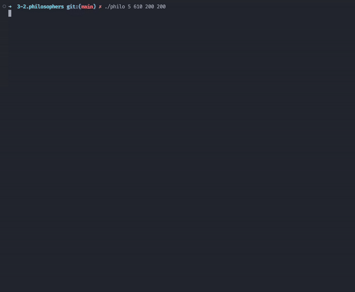
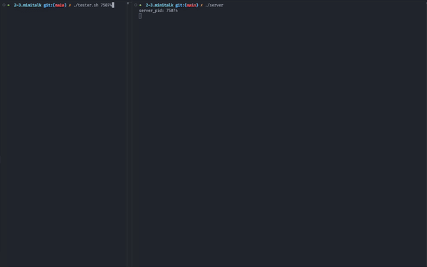
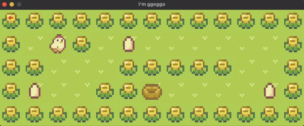
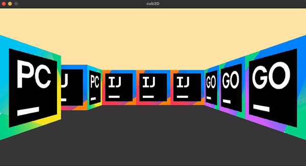
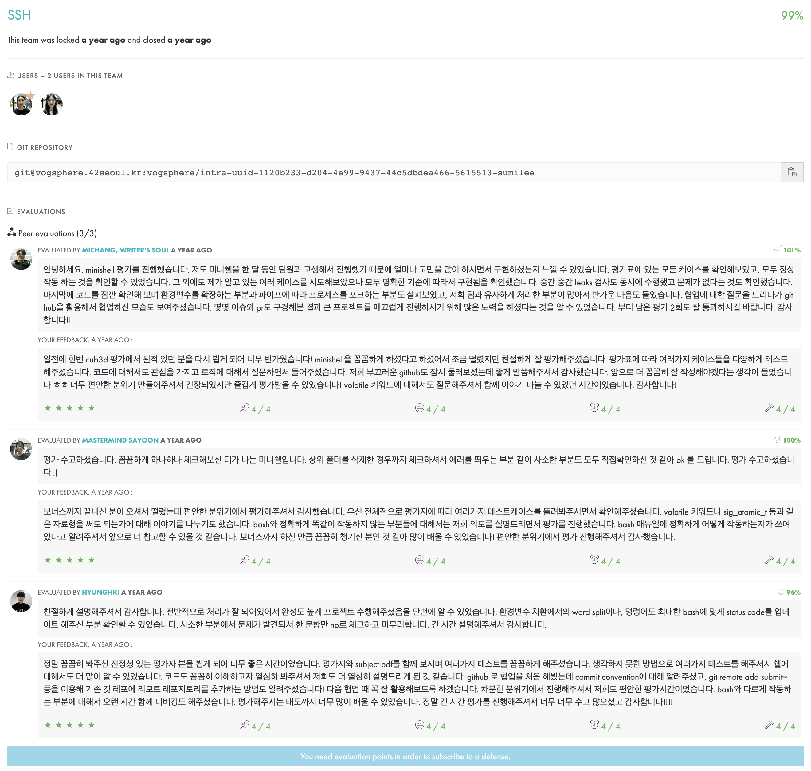

프랑스 에꼴42의 교육 철학을 기반으로, 교수, 교재, 학비 없이 동료 학습(Peer Learning)과 프로젝트 해결을 통해 소프트웨어의 본질을 탐구했습니다.
한정된 2개의 스택(Stack A, B)과 제한된 명령어 집합만을 사용하여, 무작위로 섞인 데이터를 최소한의 동작 횟수로 정렬하는 알고리즘 과제입니다. 퀵 정렬(Quick Sort)과 그리디 알고리즘을 응용하여 복잡도(Complexity)를 최적화하는 훈련을 수행했습니다.


운영체제의 고전적인 '식사하는 철학자 문제'를 통해 교착 상태(Deadlock)와 경쟁 상태(Race Condition)를 해결했습니다.
pthread API를 활용하여 스레드 간 자원 공유를 제어하고, Mutex Lock을 통해 데이터 무결성을 보장했습니다.
UNIX 시그널(SIGUSR1, SIGUSR2)만을 사용하여 서버와 클라이언트 간의 문자열 통신 프로그램을 구현했습니다. 문자열을 비트(Bit) 단위로 쪼개어 전송하고, 수신 측에서 비트 연산을 통해 다시 문자로 재조립하며 저수준 통신(Low-level Communication)의 원리를 깊이 이해했습니다.


MiniLibX 라이브러리를 활용한 2D 타일 기반 게임입니다. 맵 파일 파싱(Parsing)부터 렌더링 루프(Render Loop), 키보드 이벤트 처리를 직접 구현하며 게임 엔진의 기초 구조를 학습했습니다.
Raycasting(광선 투사) 기술을 이용하여 울펜슈타인 3D 스타일의 1인칭 3D 렌더링 엔진을 밑바닥부터 구현했습니다. 삼각함수를 이용한 거리 계산, 텍스처 매핑(Texture Mapping), 시점 변환 등을 통해 3D 그래픽스의 수학적 원리를 체득했습니다.

라이브러리 없이 메모리 관리, 자료구조(Stack, Tree), 프로세스/스레드 동기화 등을 직접 구현하며 컴퓨터 과학의 근본적인 원리를 체득하고 견고한 코드를 작성하는 능력을 길렀습니다.
작성한 코드를 동료에게 라인 단위로 설명하고 방어하는 평가 과정을 수없이 거치며, 단순히 동작하는 코드가 아닌 '읽기 쉽고 논리적인 코드'를 작성하는 습관과 커뮤니케이션 능력을 배양했습니다.
함수 길이 25줄 제한, 변수 선언 위치 등 42서울만의 엄격한 코딩 규칙(Norme)을 준수하며, 제약 사항 속에서도 가독성을 해치지 않고 효율적인 로직을 설계하는 구조적 사고력을 훈련했습니다.
42Seoul의 모든 과제는 동료 3명 이상의 평가를 통과해야 합니다. 이 과정에서 내 코드를 논리적으로 방어(Defense)하고, 타인의 코드를 분석하며 다양한 시각을 배웁니다.
함수 길이 25줄 제한, 변수 선언 위치 등 엄격한 규칙(Norminette)을 준수하며, 가독성 높고 모듈화된 코드를 작성하는 습관을 뼛속 깊이 새겼습니다.
